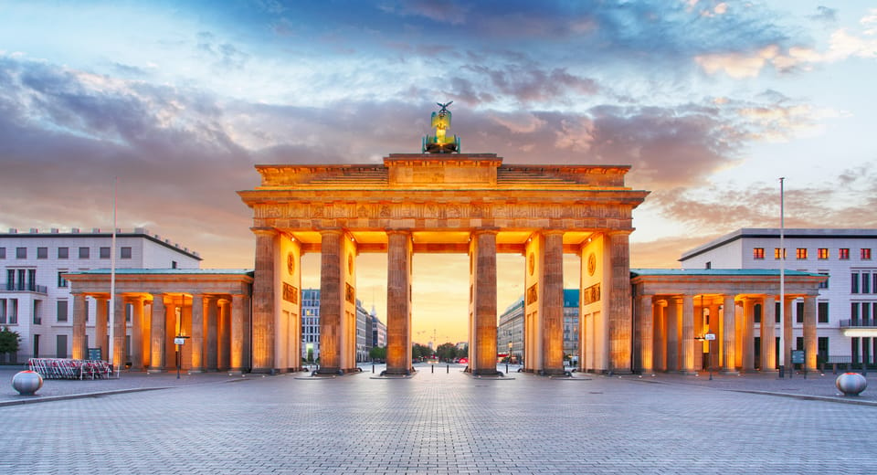
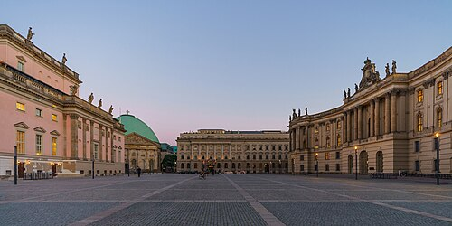

1. Puerta de Brandeburgo
Una de las mejores cosas que hacer en Berlín es pasar de día y de noche por delante de la Puerta de Brandeburgo, una de los pocos monumentos que sobrevivieron a la guerra.
2. Unter den Linden, uno de los lugares que visitar en Berlín
Con poco más de un kilómetro y medio y rodeada de edificios levantados después de su destrucción durante la Segunda Guerra Mundial, esta amplia avenida recuperó su máximo esplendor con la caída del Muro de Berlín, convirtiéndose en una de la calles favoritas para turistas y locales. Entre sus edificios más emblemáticos se encuentran el de la Nueva Guardia, construido en estilo neoclásico en 1818 para conmemorar la derrota sobre las tropas de Napoleón y que tiene en su interior una conmovedora escultura de una mujer sosteniendo en sus brazos el cuerpo sin vida de su hijo.
3. Bebelplatz, una de las plazas más emblemáticas que ver en Berlín
En uno de los lados de la Unter den Linden se encuentra la Bebelplatz, antiguamente llamada Opernplatz y considerada una de las plazas más emblemáticas que ver en Berlín. Rodeada de edificios históricos cómo la Ópera de Berlín, la Universidad Humboldt, la Antigua Biblioteca y la Catedral de Santa Eduvigis, esta plaza fue escenario en 1933 de la quema de miles de libros de algunos autores censurados por los nazis, como Karl Marx o Sigmund Freud. En recuerdo a este trágico suceso, que fue el preludio de lo que sucedería años después con el régimen nazi, se realizó un monumento donde puedes observar hileras de estanterías vacías a través de una pequeña ventana de cristal situada en el suelo.